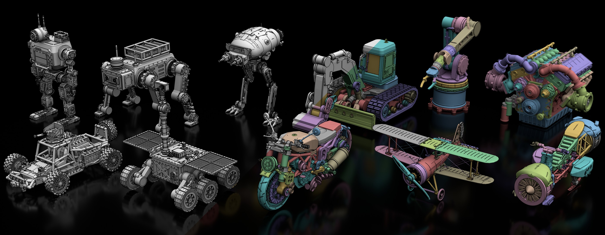
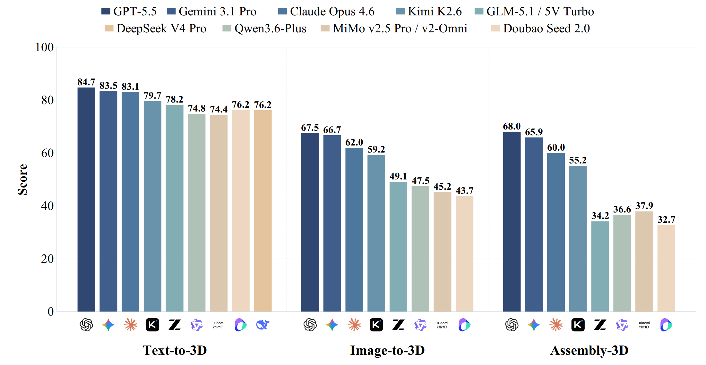

Nanjing University
M.S. in Computer Science
School of Intelligent Science and Technology
Advisor: Prof. Yao Yao
Research: 3D Generation · 3D Agents · World Models · Parametric CAD
M.S. Student · Nanjing University
I am a 2nd-year master's student at the School of Intelligent Science and Technology, Nanjing University, supervised by Prof. Yao Yao.
Before that, I received my bachelor's degree in Artificial Intelligence from Xi'an Jiaotong University. My research interests include 3D generation, 3D agents, and world models.
M.S. in Computer Science
School of Intelligent Science and Technology
Advisor: Prof. Yao Yao
Research: 3D Generation · 3D Agents · World Models · Parametric CAD

B.S. in Artificial Intelligence
Institute of Artificial Intelligence and Robotics
GPA: 3.89 / 4.3

Preprint 2026
A 3D modeling agent that turns text prompts into editable, part-structured procedural assemblies with machine-checkable mates, materials, and articulation.

Preprint 2026
A benchmark for evaluating multimodal large language models on parametric 3D generation across Text-to-3D, Image-to-3D, and Assembly-3D tasks.
NeurIPS 2025
A scalable 3D generation framework based on sparse volumes that improves output quality while reducing training costs.
Algorithm Research Intern · Shenzhen, China
Algorithm Intern · Xi'an, China